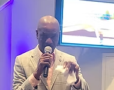

Building Faith,
Strengthening Families
Bati Lafwa, Ranfòse Fanmi
We are committed to guiding every member toward a deeper connection with God, fostering a welcoming community of faith, service, and spiritual growth.
Nou angaje pou gide chak manm nan yon koneksyon ki pi pwofon ak Bondye, kreye yon kominote akeyan nan lafwa, sèvis, ak kwasans espirityèl.
Biblical Teaching
Ansèyman Biblik
Grounded in Scripture, we provide clear, relevant teaching that helps you grow in your understanding of God's Word and apply it to daily life.
Baze sou Ekriti Sent, nou bay ansèyman klè ki ede ou grandi nan konpreyansyon Pawòl Bondye a epi aplike l nan lavi chak jou.
Loving Community
Kominote Lanmou
Experience genuine fellowship in a warm, welcoming environment where everyone belongs and can grow together in faith and friendship.
Fè eksperyans yon vrè fratènite nan yon anviwonman chalè kote tout moun gen plas yo epi ka grandi ansanm nan lafwa ak amitye.
Serving Others
Sèvi Lòt Moun
Live out your faith through meaningful service opportunities that make a real difference in our community and around the world.
Viv lafwa ou atravè opòtinite sèvis ki fè yon vrè diferans nan kominote nou an ak nan lemond antye.
Latest Messages · Dènye Mesaj yo
Join us online for inspiring worship, powerful teaching, and life-changing messages from God's Word.
Vin jwenn nou sou entènèt pou adorasyon enspiran, ansèyman pwisan, ak mesaj ki chanje lavi soti nan Pawòl Bondye a.
Sunday Service · Sèvis Dimanch
Faith & Growth · Lafwa & Kwasans
Prayer Night · Nwit Lapriyè
Church Leadership · Lidèchip Legliz la
Our dedicated pastors and leaders are here to guide, support, and walk alongside you in your faith journey.
Pastè ak lidè devwe nou yo la pou gide, sipòte, ak mache bò kote ou nan vwayaj lafwa ou.
Ernson Dely
Senior Pastor & Head of Staff
Pastè Anchèf & Chèf Ekip
Skaina G. Mindron
Associate Pastor for Missions
Pastè Asosye pou Misyon

Steve Dely
Associate Pastor
Pastè Asosye
Amstrong Belizaire
Associate Pastor
Pastè Asosye
Upcoming Events · Evènman k ap Vini
Join us for meaningful gatherings, inspiring services, and community outreach opportunities.
Vin jwenn nou pou rasanbleman ki gen sans, sèvis enspiran, ak opòtinite pou sèvi kominote a.
Submit a Prayer Request
Soumèt yon Demann Lapriyè
We believe in the power of prayer. Share your needs with us, and our prayer team will lift you up.
Nou kwè nan pouvwa lapriyè. Pataje bezwen ou avèk nou, epi ekip lapriyè nou an ap leve ou devan Bondye.